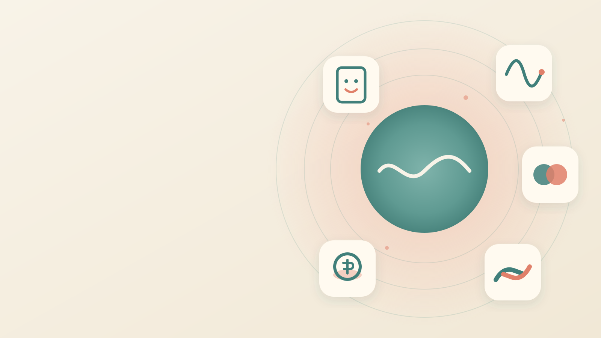

250 ideer.
AldersomsorgBipolar lidelseEnsomhet
Kronisk smerte og sorgPrivatøkonomi

Én prototype
fungerer allerede.
fungerer allerede.
Det kommer flere.
Vi lager dem sammen.
Vi lager dem sammen.
250 ideer som
kan endre liv
kan endre liv
[nettadresse kommer]